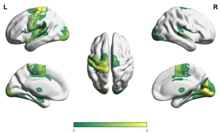
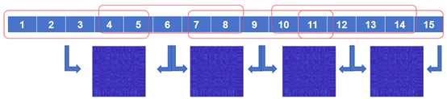

The figure shows the directed and hierarchical features from auditory regions the other activated ROIs, which requires only three steps to traverse all ROIs.
** Previous study indicated that musicians differentiate from non-musicians about functional integration between vary regions in brain during naturalistic music listening. Moreover, a study examined fMRI responses during music listening, found that functional connectivity within and between auditory and reward network was modulated by music pleasurable, they also found the old adult, after a long time music-based intervention, showed more significant increase in functional connectivity between vary regions than pre-intervention. Among these, music training would strengthen connections between the reward system and other brain regions, which reduces cognitive decline caused by aging. Based on Granger causality model (GCM), a study revealed a noteworthy rise in the outflow-inflow degree within the auditory cortex, with musicians exhibiting the most prominent causal outflow pattern of effective connectivity. However, there is limited research that can model the hierarchical architecture of the directed network under musical and aging intervention. Using the method of stepwise multivariate Granger causality (SMGC), we found specific distinctions about directed and hierarchical features between old musicians and other control groups.
A first-level analysis was conducted in order to study the brain regions involved in the music reward task. We used individual fMRI data collected under the different music record stimulus. The results showed significant cortical and subcortical activations in brain areas related to sensory response (such as auditory, tactile and visual regions), reward response (such as basal ganglia). Thought the various task effect compared between high reward music and low reward music stimulus using paired t-test in second-level analysis, we found the distinguished 92 activating ROIs(p<0.05, FDR correction), after that we picked significant different activate regions among groups in the activation ROIs (p<0.05, FWE corrected) , the regions include: superior frontal gyrus, precentral gyrus, superior temporal gyrus, rostro posterior superior temporal sulcus, lateral occipital cortex, basal ganglia(dorsal caudate). 92 activation ROIs after paired t-tests were shown in Figure 1.

The task-related brain regions include primary sensory cortex, ventral caudate as well as prefrontal and other brain regions.
80 participants were asked to choose individual favorite music and rank each music from 0-10, while 0 represent to the most dislike and 10 represent to the most like music. During the fMRI scan, the participant re-rate to the fanciest and most dislike music record they chose. During the data analysis, we sifted and removed trials which were inconsistent with the pre- and post-ratings in order to correspond individual feeling, alleviate the influence of scan surroundings.
Table 2. The significant difference in activate regions in the activation ROIs (p<0.05, FWE correction).
| ROI | Network | MNI space(x,y,z) | t-value |
|---|---|---|---|
| SFG_L_7_4 | Dorsal Attention | -18, -1, 65 | 0.1244 |
| SFG_L_7_5 | Somatomotor | -6, -5, 58 | 0.0721 |
| PrG_L_6_1 | Somatomotor | -49, -8, 39 | 0.4659 |
| PrG_L_6_2 | Dorsal Attention | -32, -9, 58 | 0.3273 |
| PrG_R_6_2 | Dorsal Attention | 33, -7, 57 | 0.0896 |
| PrG_L_6_3 | Somatomotor | -26, -25, 63 | 0.5000 |
| PrG_L_6_4 | Somatomotor | -13, -20, 73 | 0.0370 |
| PrG_L_6_5 | Ventral Attention | -52, 0, 8 | 0.0441 |
| PrG_R_6_6 | Dorsal Attention | 51, 7, 30 | 0.1202 |
| STG_L_6_2 | Somatomotor | -54, -32, 12 | 0.4722 |
| STG_R_6_2 | Somatomotor | 54, -24, 11 | 1.4054 |
| STG_L_6_3 | Somatomotor | -50, -11, 1 | 0.4721 |
| STG_R_6_3 | Somatomotor | 51, -4, -1 | 0.3192 |
| STG_L_6_4 | Somatomotor | -62, -33, 7 | 0.0914 |
| STG_R_6_4 | Somatomotor | 66, -20, 6 | 0.2400 |
| STG_L_6_6 | Default | -55, -3, -10 | 0.1514 |
| STG_R_6_6 | Default | 56, -12, -5 | 0.9541 |
| MTG_R_4_4 | Default | 58, -16, -10 | 0.0692 |
| pSTS_L_2_1 | Default | -54, -40, 4 | 0.1250 |
| pSTS_R_2_1 | Default | 53, -37, 3 | 0.0714 |
| IPL_L_6_6 | Somatomotor | -53, -31, 23 | 0.1597 |
| PoG_L_4_1 | Somatomotor | -50, -16, 43 | 0.3444 |
| PoG_L_4_2 | Somatomotor | -56, -14, 16 | 0.0349 |
| PoG_L_4_4 | Somatomotor | -21, -35, 68 | 0.0149 |
| INS_L_6_1 | Somatomotor | -36, -20, 10 | 0.2020 |
| MVOcC_R_5_1 | Visual | 10, -85, -9 | 0.1361 |
| MVOcC_L_5_2 | Visual | -5, -81, 10 | 0.0451 |
| MVOcC_R_5_2 | Visual | 7, -76, 11 | 0.4553 |
| MVOcC_L_5_3 | Visual | -6, -94, 1 | 0.1978 |
| MVOcC_R_5_3 | Visual | 8, -90, 12 | 0.0114 |
| MVOcC_R_5_4 | Visual | 18, -60, -7 | 0.2360 |
| MVOcC_R_5_5 | Visual | 15, -63, 12 | 0.0631 |
| LOcC_L_4_1 | Visual | -31, -89, 11 | 0.0591 |
| LOcC_L_4_3 | Visual | -18, -99, 2 | 0.0748 |
| LOcC_L_4_4 | Visual | -30, -88, -12 | 0.0639 |
| LOcC_R_4_4 | Visual | 32, -85, -12 | 0.0469 |
| BG_R_6_5 | —— | 14, 5, 14 | 0.3822 |
Stepwise multivariate Granger causality
By dynamic Granger causality model (dGCM), we are able to obtain the specific routes and ROIs that information flows and travels through, which is fundamental to model hierarchical architecture of directed network. But before this, we have to further process the obtained dGCM as to gain the specific mode. First, we removed inactivated trails based on incompatible music scores. After that we averaged the matrix of the remaining groups. The matrix was then be proceed to antisymmetric correlation and the final obtained for the further stepwise causal relationship.
Using SMGC, we found that there existed diverse between-ROIs pathways from A1 to M1 and S1 among groups, the comparison revealed the trend that older control > older musicians > young control > young musicians. Moreover, we found the musicians have more directed stepwise from A1 to R1 and from R1 to S1. Stepwise hierarchical progression in the brains of four group subjects was shown in Figure 2.
The figure shows the directed and hierarchical features from auditory regions the other activated ROIs, which requires only three steps to traverse all ROIs.
Prior studies focus on musicians and non-musicians, found that music listening engages specific cortical regions within the temporal lobes [6]. We examined 80 subjects from different age and musical training, using high/low reward music task showing significant activated differences of many task-related brain regions such as M1, A1, S1 and R1, which indicated that distinct brain regions exhibit varying degrees of activation in response to music stimuli with different levels of pleasure. Among this, we thought that auditory regions and reward brain regions were the main ROIs for this study. Subsequently, through some research uses stepwise functional connectivity to observe the cerebral hierarchical information transfer between musicians and non-musicians. Using the GCM, we further constructed connectivity evolution in the temporal domain, and we found discerned inter-group differences in the directed information transfer among distinct ROIs. Particularly, we also identified a more prominent pathway in musicians, extending from the A1 through the R1 to S1 is most abundant in the group of old musicians. It might indicate that after long-term music training, the information starting from auditory regions would reach the reward system first and then drive the sensory systems to work later, while the control group does not need to go through the reward brain areas; instead, the auditory system directly causes cognition as well as sensory work. This could suggest that musicians have greater information needs for reward-related systems such as the basal ganglia than non-musicians.
In the study, 22 old controls, 16 old musicians, 22 young controls and 20 young musicians were recruited in this experiment. The young and old musicians were recruited through an advertisement from Sichuan Conservatory of Music. The young and old controls were recruited from the University of Electronic Science and Technology of Chian and community respectively. All subjects were right-handed according to the Edinburgh Handedness Inventory and had no neurological or psychiatric disorders. They were paid for participating in the study. All musicians had long-term musical education and could play at least one instrument. All controls didn’t receive musical training and could not play instrument. The level of music ability of all subjects was confirmed by the Montreal Music History Questionnaire (MMHQ)，the Goldsmiths Musical Sophistication Index (Gold-MSI), and the Barcelona Music Reward Questionnaire (BMRQ). Moreover, we collected Mini-Mental State Examination (MMSE), Self-Rating Depression Scale (SDS), Self-Rating Anxiety Scale (SAS), and the Big Five Inventory to further explore the subjects’ individual backgrounds and difference. The participant demographic data are shown in Table 1. We collected functional Magnetic Resonance Imaging (fMRI) data under the paradigm of music reward task.
Before the task, subject rated the music sequence in the range of 0-10, which 0 represent rarely pleasant emotional responses and 10 represent consistently elicited intensely pleasant emotional responses, including chills. All auditory stimuli utilized consist of pop music excerpts. The music selected by each subject was the most reliable way to produce intense emotional response. After that, we selected the highest rated music of each subject as the high reward music and the lowest rated music of each subject as the low reward music, which was used as a stimulus source signal together with blank stimuli and noise stimuli.
On each trail, subjects listened to 30s high/low award music picked by each subject, 30s blank and 30s noise respectively. After each section of stimulus end, subject rated how much they liked the acoustic stimulus on a scale from “Most Disliked Stimulus” to “Most Liked Stimulus” in 4s as a feedback break. All ratings were made on visual analog scales through a scroll wheel and keyboard button press. The order of acoustic stimulus for each trial was randomized and we collected three trails per subject in the task.
Function MRI scans were acquired using a 3T magnetic resonance imaging (MRI) scanner (MR750; GE Discovery, Milwaukee, WI, USA) at the MRI Research Center of University of Electronic Science and Technology of China. During scanning, foam padding and earplugs were used to reduce head motion and scanning noise, respectively. The functional images were acquired using an echo-planar imaging sequence (slices = 35, slice scan order: interleave, echo time [TE] = 30 msec, repetition time [TR] = 2000 msec, flip angle [FA] = 90°, field of view [FOV] = 24×24 [cm]^2, matrix = 64×64,slice thickness/gap = 4mm/0.4mm, and slices = 255). Structural T_1-weighted images were acquired using a 3D fast spoiled gradient echo sequence (echo time [TE] = 1.984 msec, flip angle [FA] = 90°, field of view [FOV] = 25.6×25.6 [cm] ^2, matrix = 256×256, slice thickness/gap = 1mm/0mm, and 125 slices).
Preprocessing was performed using NIT and DPABI toolbox. To avoid MRI machine field effects and eliminate head movements of the participants, a series of preprocessing steps were performed, including discarding the first five volumes, slice time correction, 3D motions detection and correction, and spatial normalization (using parameters from individual T1 segmentation, and normalizing to MNI space with 3 × 3 × 3 [mm]^3). Then, the white matter and cerebrospinal fluid signals, linear trend signals, whole brain mean signal, and 12 head motion parameters were regressed to reduce nonneural noise and artifacts. Temporal bandpass filtering (pass band 0.01–0.08 Hz) was conducted using a phase-insensitive filter, which was used to reduce the effects of low-frequency drift and high-frequency noise.
We used SPM12 to calculate the brain region activation during the music reward task. First, we conducted first-level analysis for each participant with preprocessed images. For each trail, we modeled neural activity, including response of high/low award music picked by each subject, 30s blank and 30s noise. We treated each voxel according to SPM’s general linear model (GLM). The first-level analysis was also performed following the guidelines and parameters provided by SPM tutorials and with SPM’s default values. Once first-level analysis was completed, we obtained brain region activations at the participant individually, after that, we create a contract image for each participant for the second-level analysis.
We performed the second-level analysis with classical inference implemented in SPM12. To examine the difference in neural activity between high reward music and low reward music stimulus, we performed a paired t-test with contrast images created from first-level analysis. All 80 contrast images from four groups subjects were entered into a second-level paired t-test model. Then we used a classical inference module implemented in SPM 12, followed the criteria threshold provided by SPM 12 by default to exam which voxels survived. The thresholding criteria were utilized: a voxel-wise threshold p<0.05(FDR corrected) applying mask by the Brainnetome Atlas showing 92 ROIs activation.
The dynamic Granger Causal Metrix performed using DynamicBC. First, we chose the ROI-wise by Brainnetome Atlas template, calculated the dynamic effective connection matrix using classical inference implemented in DynamicBC. However, some methodological issues still need to be discussed such as parameter selection of sliding-window length and sliding-window step size. Despite the popularity of dynamic functional connectivity, result is strongly dependent on window length. Therefore, after numerous attempts, constrained by the length of the time series under music reward task conditions and empirical rules of sliding-window length and step, the final sliding-window length of 5TRs and step size of 3TRs were selected. The procedure produced 5 windows for each participant. Considered we used the Brainnetome Atlas template, four matrixes representing stepwise dynamic effective connection in each participant’s brain were calculated. After dGCMs construction, we owned materials for the further stepwise causal relationship.
We performed the Granger causality matrix through a stepwise approach. Some activation regions represented cognition regions(M1), auditory regions(A1), other sensory regions(S1) and reward regions(R1) were selected as the regions of interests (ROIs), which were used as the origin or destination looking for various pathways. In the first step, we obtained the ROIs where information significantly flowed away by a one-sample one-tailed t-test within the four groups (p<0.05, FDR correction), then we retained the ROIs owned top 5% of the t-value. In the second step, using the same t-test, we searched for the next level of effective delivery ROIs through the ROIs retained in the first step from the second GCM matrix, and retained ROI which at top 5% as well. In the next step, we continue the same approach until all activated ROIs were traversed.

In brief, the calculation method is to obtain the effective activation points through second-order activation, and then calculate the dynamic GCM between pairs of BOLD signals in a window, the values in the matrix represent the size of the directed transfer of information from different ROIs, and the value of the transmission between two ROIs is obtained through anti-symmetric processing. After that, the seed points were selected for each group of the GCM matrix, and a one-sample, one-tailed t-test is performed after the z-score transformation to set the threshold value for finding the next transmission valid ROIs, then brought them into the second matrix to recycle the processing, and finally obtain the brain region of interest connectivity status.